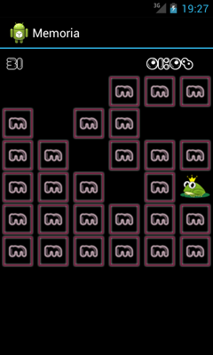
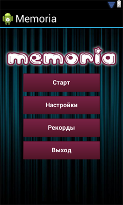

/* Моя кошка замечательно разбирается в программировании. Стоит мне объяснить проблему ей - и все становится ясно. */
John Robbins, Debugging Applications, Microsoft Press, 2000

/* Моя кошка замечательно разбирается в программировании. Стоит мне объяснить проблему ей - и все становится ясно. */
John Robbins, Debugging Applications, Microsoft Press, 2000
В первой части мы начали делать игру для тренировки памяти. Собственно игра уже готова, осталось добавить к ней красоты. В этом уроке добавим таймер, который будет отсчитывать время с начала до окончания игры, учет ходов, то есть количество открытых карточек и добавим начальный экран.
С количеством ходов всё понятно - будем считать количество открытых картинок и выводить это число в TextView. Для таймера есть класс Chronometer, который делает как раз то что нам нужно — отсчитывает время.
Добавим в main.xml элементы TextView и Chronometer
<?xml version="1.0" encoding="utf-8"?>
<LinearLayout xmlns:android="http://schemas.android.com/apk/res/android"
android:layout_width="fill_parent"
android:layout_height="fill_parent"
android:orientation="vertical" >
<LinearLayout
xmlns:android="http://schemas.android.com/apk/res/android"
android:layout_width="fill_parent"
android:layout_height="wrap_content"
android:orientation="horizontal" >
<TextView
xmlns:android="http://schemas.android.com/apk/res/android"
android:id="@+id/stepview"
android:layout_width="0dip"
android:layout_height="wrap_content"
android:layout_marginLeft="10dip"
android:layout_weight="1"
android:textSize="30dp" />
<Chronometer
xmlns:android="http://schemas.android.com/apk/res/android"
android:id="@+id/timeview"
android:layout_width="100dip"
android:layout_height="wrap_content"
android:textSize="30dp" />
</LinearLayout>
<GridView
xmlns:android="http://schemas.android.com/apk/res/android"
android:id="@+id/field"
android:layout_width="fill_parent"
android:layout_height="wrap_content"
android:gravity="center" />
</LinearLayout>
В классе MemoriaActivity напишем их обработку:
...
private TextView mStepScreen;
private Chronometer mTimeScreen;
private Integer StepCount; // кол-во ходов
@Override
public void onCreate(Bundle savedInstanceState) {
...
mTimeScreen = (Chronometer) findViewById(R.id.timeview);
mStepScreen = (TextView)findViewById(R.id.stepview);
// шрифт
Typeface type = Typeface.createFromAsset(getAssets(),"my-font.ttf");
mTimeScreen.setTypeface(type);
mStepScreen.setTypeface(type);
StepCount = 0;
mStepScreen.setText (StepCount.toString());
mTimeScreen.start();
...
mGrid.setOnItemClickListener(new OnItemClickListener() {
@Override
public void onItemClick(AdapterView<?> parent, View v,int position, long id) {
mAdapter.checkOpenCells ();
mAdapter.openCell (position);
StepCount ++;
mStepScreen.setText (StepCount.toString());
if (mAdapter.checkGameOver())
{
mTimeScreen.stop();
String time = mTimeScreen.getText().toString();
String TextToast = "Игра закончена nХодов: " + StepCount.toString() + "nВремя: " + time;
Toast.makeText (getApplicationContext(), TextToast, Toast.LENGTH_SHORT).show();
}
}
});
}
}
Запускаем:
Тут, кстати, обнаружилась небольшая ошибка в игре: нажатие на уже удаленную картинку считается ходом, что неправильно. Переделаем метод openCell() в классе GridAdapter - он должен проверять, является ли карточка закрытой и только тогда ее открывать.
public boolean openCell(int position) {
if (arrStatus.get(position) == Status.CELL_DELETE
|| arrStatus.get(position) == Status.CELL_OPEN)
return false;
if (arrStatus.get(position) != Status.CELL_DELETE)
arrStatus.set(position, Status.CELL_OPEN);
notifyDataSetChanged();
return true;
}
А в классе MemoriaActivity будем правильно считать ходы
mGrid.setOnItemClickListener(new OnItemClickListener() {
@Override
public void onItemClick(AdapterView<?> parent, View v,int position, long id) {
mAdapter.checkOpenCells ();
if (mAdapter.openCell (position)) {
StepCount ++;
mStepScreen.setText (StepCount.toString());
}
...
}
});
Обратите внимание, что в этом коде мы используем свой шрифт (у меня это 'my-font.ttf'), предварительно добавленный в папку assets.
В xml и у TextView и у Chronometer также описаны параметры шрифта
android:textSize="30dp" android:textColor="#FFFFFF"
Две строчки, конечно, можно и скопировать в два места, но если или строчек или мест будет много, то это неудобно, да и места много занимает. Создадим стиль шрифта. Добавим файл style.xml в директорию /res/values/. Напишем туда:
<?xml version="1.0" encoding="utf-8"?>
<resources>
<style name="MyText">
<item name="android:textColor">#FFFFFF</item>
<item name="android:textSize">30dp</item>
<item name="android:shadowColor">#782144</item>
<item name="android:shadowDx">2</item>
<item name="android:shadowDy">2</item>
<item name="android:shadowRadius">3</item>
</style>
<style name="ButtonText">
<item name="android:layout_width">fill_parent</item>
<item name="android:layout_height">wrap_content</item>
<item name="android:textColor">#ffffff</item>
<item name="android:gravity">center</item>
<item name="android:layout_margin">1dp</item>
<item name="android:textSize">16dp</item>
<item name="android:textStyle">bold</item>
<item name="android:shadowColor">#000000</item>
<item name="android:shadowDx">2</item>
<item name="android:shadowDy">2</item>
<item name="android:shadowRadius">3</item>
</style>
</resources>
А в main.xml заменим эти строчки у TextView и Chronometer на:
style="@style/MyText"
Теперь, чтобы изменить стиль шрифта и в TextView и в Chronometer, надо изменить только файл style.xml, например можно добавить тень к тексту:
Попробуем повернуть экран горизонтально (на эмуляторе это можно сделать нажав Ctrl + F11) - выглядит теперь не очень хорошо. Здесь есть три решения.
Первое - запретить поворот зкрана. Сам телефон крутить, конечно, можно, но изображение от этого меняться не будет. Для этого добавим строку android:screenOrientation="portrait" в файл AndroidManifest.xml.
<activity
android:name=".MemoriaActivity"
android:label="@string/app_name"
android:screenOrientation="portrait">
Второй вариант - написать другую разметку xml для горизонтальной ориентации экрана. Создадим директорию /res/layout-land, а в ней файл main.xml с новой разметкой.
Третий способ - отловить поворот экрана программно, для этого добавим в AndroidManifest.xml за каким изменением конфигурации мы хотим следить:
<activity
android:name=".MemoriaActivity"
android:label="@string/app_name"
android:configChanges="orientation">
А в класс MemoriaActivity добавим метод onConfigurationChanged(Configuration newConfig), который вызывается каждый раз, когда конфигурация аппарата меняется.
@Override
public void onConfigurationChanged(Configuration newConfig) {
super.onConfigurationChanged(newConfig);
if (newConfig.orientation == Configuration.ORIENTATION_LANDSCAPE)
mGrid.setNumColumns(9);
if (newConfig.orientation == Configuration.ORIENTATION_PORTRAIT)
mGrid.setNumColumns(6);
}
В вертикальном расположении экрана у нас поле 6х6, а в горизонтальном - 9х4.
Теперь сделаем начальный экран, на котором будут четыре кнопки (Старт, Настройки, Рекорды, Выход) на каком-нибудь фоне. Создаем файл MemoriaStart.java с классом MemoriaStart (унаследованным от Activity) и разметку start.xml. Сделаем две разметки для вертикальной и горизонтальной ориентации.
Если после этого запустить программу, то откроется окно MemoriaActivity, для того чтобы первым открывалось MemoriaStart изменим AndroidManifest.xml:
<application
android:icon="@drawable/ic_launcher"
android:label="@string/app_name" >
<activity
android:name=".MemoriaStart"
android:label="@string/app_name">
<intent-filter>
<action android:name="android.intent.action.MAIN" />
<category android:name="android.intent.category.LAUNCHER" />
</intent-filter>
</activity>
<activity android:name=".MemoriaActivity"
android:label="@string/app_name"
android:configChanges="orientation">
</activity>
</application>
На нажатие кнопок «Настройка» и «Рекорды» пока никак реагировать не будем, а «Старт» и «Выход» сделаем:
public class MemoriaStart extends Activity {
Button mStart;
Button mExit;
@Override
public void onCreate(Bundle savedInstanceState) {
super.onCreate(savedInstanceState);
setContentView(R.layout.start);
mStart = (Button)findViewById(R.id.butStart);
mExit = (Button)findViewById(R.id.butExit);
mStart.setOnClickListener (new OnClickListener() {
@Override
public void onClick(View v) {
startGame();
}
});
mExit.setOnClickListener (new OnClickListener() {
@Override
public void onClick(View v) {
finish();
}
});
}
private void startGame () {
Intent i = new Intent(this, MemoriaActivity.class);
startActivity (i);
}
}
Для того чтобы открыть другое окно программы используется метод void startActivity (Intent intent), которому передается экземпляр класса Intent.
Запускаем проект - теперь при запуске программы, вначале показывается окно с кнопками, при нажатии на «Старт» запускается игра, а кнопка «Выход» закрывает приложение. Чтобы из игры вернуться на начальный экран можно нажать кнопку «Назад» на телефоне, но для наглядности после завершения игры будем показывать не просто всплывающее сообщение, а диалоговое окно с кнопкой, по нажатию на которое будем возвращаться назад.
В классе MemoriaActivity при завершении игры вызовем функцию ShowGameOver()
public class MemoriaActivity extends Activity {
...
mGrid.setOnItemClickListener(new OnItemClickListener() {
@Override
public void onItemClick(AdapterView<?> parent, View v,int position, long id) {
...
if (mAdapter.checkGameOver())
{
mTimeScreen.stop();
ShowGameOver();
}
}
});
}
И напишем саму функцию ShowGameOver()
public class MemoriaActivity extends Activity {
...
private void ShowGameOver () {
// Диалоговое окно
AlertDialog.Builder alertbox = new AlertDialog.Builder(this);
// Заголовок и текст
alertbox.setTitle("Поздравляем!");
String time = mTimeScreen.getText().toString();
String TextToast = "Игра закончена nХодов: " + StepCount.toString() + "nВремя: " + time;
alertbox.setMessage(TextToast);
// Добавляем кнопку
alertbox.setNeutralButton("Ok", new DialogInterface.OnClickListener() {
public void onClick(DialogInterface arg0, int arg1) {
// закрываем текущюю Activity
finish();
}
});
// показываем окно
alertbox.show();
}
}
Запускаем и проверяем. Всё работает. Мы сделали счётчики и начальный экран. Попутно посмотрели, как установить свой шрифт, как сделать общий стиль для нескольких элементов приложения, как реагировать на изменения ориентации экрана и научились выводить диалоговое окошко.
Источник: Программирование для android - Игра для тренировки памяти (часть два)